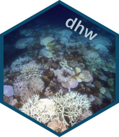

NOAA_CRW_data
NOAA_CRW_data.Rdsubset of NOAA CRW data from rerdapp
Format
dataframe
- CRW_SST
Sea Surface Temperature)
- CRW_SSTANOMALY
Sea Surface Temperature anomaly)
- CRW_DHW
Degree Heating Weeks
Source
library(rerddap)
NOAA_CRW <- griddap( datasetx = 'NOAA_DHW', time = c("2015-06-01", "2017-06-01"), latitude = c(-14.655, -14.655), longitude = c(145.405, 145.405), fmt = "nc" )
NOAA_CRW_data <- NOAA_CRW$data
Examples
data(NOAA_CRW_data)
summary(NOAA_CRW_data)
#> longitude latitude time CRW_BAA
#> Min. :145.4 Min. :-14.68 Length:732 Min. :0.0000
#> 1st Qu.:145.4 1st Qu.:-14.68 Class :character 1st Qu.:0.0000
#> Median :145.4 Median :-14.68 Mode :character Median :0.0000
#> Mean :145.4 Mean :-14.68 Mean :0.4795
#> 3rd Qu.:145.4 3rd Qu.:-14.68 3rd Qu.:1.0000
#> Max. :145.4 Max. :-14.68 Max. :4.0000
#>
#> CRW_BAA_7D_MAX CRW_BAA_7D_MAX_mask CRW_BAA_mask CRW_DHW
#> Min. :0.0000 Min. :0 Min. :0 Min. :0.000
#> 1st Qu.:0.0000 1st Qu.:0 1st Qu.:0 1st Qu.:0.000
#> Median :0.0000 Median :0 Median :0 Median :0.000
#> Mean :0.6257 Mean :0 Mean :0 Mean :1.947
#> 3rd Qu.:1.0000 3rd Qu.:0 3rd Qu.:0 3rd Qu.:3.950
#> Max. :4.0000 Max. :0 Max. :0 Max. :8.990
#>
#> CRW_DHW_mask CRW_HOTSPOT CRW_HOTSPOT_mask CRW_SEAICE CRW_SST
#> Min. :0 Min. :-5.2900 Min. :0 Min. : NA Min. :23.30
#> 1st Qu.:0 1st Qu.:-3.1100 1st Qu.:0 1st Qu.: NA 1st Qu.:25.48
#> Median :0 Median :-1.4300 Median :0 Median : NA Median :27.16
#> Mean :0 Mean :-1.4099 Mean :0 Mean :NaN Mean :27.18
#> 3rd Qu.:0 3rd Qu.: 0.2625 3rd Qu.:0 3rd Qu.: NA 3rd Qu.:28.85
#> Max. :0 Max. : 2.0600 Max. :0 Max. : NA Max. :30.65
#> NA's :732
#> CRW_SSTANOMALY CRW_SSTANOMALY_mask
#> Min. :-0.9800 Min. :0
#> 1st Qu.: 0.4100 1st Qu.:0
#> Median : 0.8500 Median :0
#> Mean : 0.9107 Mean :0
#> 3rd Qu.: 1.4700 3rd Qu.:0
#> Max. : 2.7700 Max. :0
#>